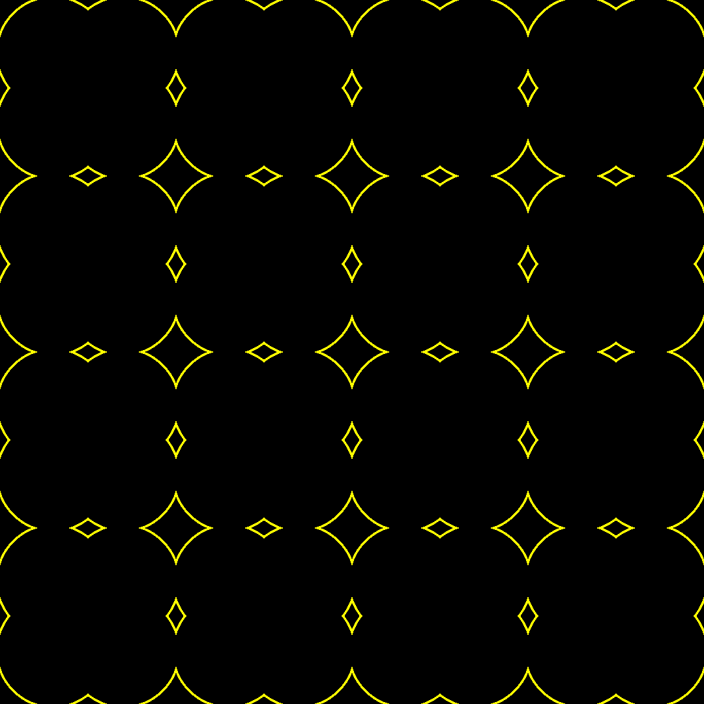
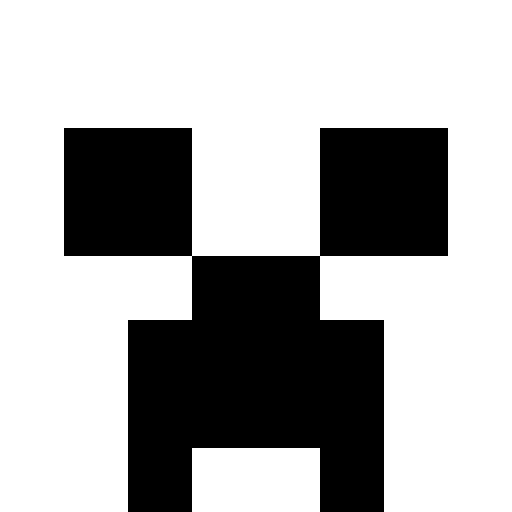

Mask¶
Masks are 2D boolean numpy arrays which are primarily used to represent selections for
example some region of an image. Masks are typically given to functions like
arlunio.image.fill() to indicate which regions of an image a particular operation
should affect. This module provides a Mask class that builds on a standard
numpy array as well as a number of functions and definitions for manipulating it.
Creating Masks¶
-
arlunio.mask.all_(*args: Union[bool, numpy.ndarray, arlunio.mask.Mask]) → arlunio.mask.Mask[source]¶ Given a number of conditions, return
Trueonly if all of the given conditions are true.This function is implemented as a thin wrapper around numpy’s
numpy.logical_andfunction so that it can take an arbitrary number of inputs. This also means that this function will accept arrays of differing sizes, assuming that they can be broadcasted to a common shape.- Parameters
args – A number of boolean conditions, a conditon can either be a single boolean value, or a numpy array of boolean values.
Examples
>>> import arlunio.mask as mask >>> mask.all_(True, True, True) Mask(True) >>> mask.all_(True, False, True, True) Mask(False)
If the arguments are boolean numpy arrays, then the any condition is applied element-wise
>>> import numpy as np >>> x1 = np.array([True, False, True]) >>> x2 = np.array([False, False, True]) >>> x3 = np.array([False, True, True]) >>> mask.all_(x1, x2, x3) Mask([False, False, True])
Arugments can be any mixture of booleans, masks and numpy arrays.
>>> mask.all_( ... True, ... mask.Mask([True, False]), ... np.array([[False, True], [True, False]]) ... ) Mask([[False, False], [ True, False]])
See also
- Broadcasting
Numpy documentation on broadcasting.
- Array Broadcasting in Numpy
Further background on broadcasting.
numpy.logical_andReference documentation on the
logical_andfunction.
-
arlunio.mask.any_(*args: Union[bool, numpy.ndarray, arlunio.mask.Mask]) → arlunio.mask.Mask[source]¶ Given a number of conditions, return
Trueif any of the conditions are true.This function is implemented as a thin wrapper around numpy’s
numpy.logical_orfunction so that it can take an arbitrary number of inputs. This also means that this function will accept arrays of differing sizes, assuming that they can be broadcasted to a common shape.- Parameters
args – A number of boolean conditions, a condition can either be a single boolean value or a numpy array of boolean values.
Examples
>>> import arlunio.mask as mask >>> mask.any_(True, False, False) Mask(True) >>> mask.any_(False, False, False, False) Mask(False)
If the arguments are boolean numpy arrays, then the any condition is applied element-wise
>>> import numpy as np >>> x1 = np.array([True, False, True]) >>> x2 = np.array([False, False, True]) >>> x3 = np.array([False, True, False]) >>> mask.any_(x1, x2, x3) Mask([ True, True, True])
The arguments can be any mixture of booleans, arrays and masks.
>>> mask.any_( ... False, ... mask.Mask([True, False]), ... np.array([[False, True], [True, False]]) ... ) Mask([[ True, True], [ True, False]])
See also
- Broadcasting
Numpy documentation on broadcasting.
- Array Broadcasting in Numpy
Further background on broadcasting.
numpy.logical_orReference documentation on the
numpy.logical_orfunction
-
class
arlunio.mask.Mask(arr)[source]¶ A mask is just a boolean numpy array.
They are typically used to represent ‘selections’ for various operations such as when coloring a region of an image.
Definitions¶
This module also contains a number of definitions that either produce or manipulate masks in some way
Return an empty mask with the given dimensions |
|
Return a full mask with the given dimensions |
|
Construct a mask from smaller, simpler masks |
|
Construct a mask by replicating an existing one. |
|
Enlarge an existing mask, creating a pixelised effect. |
Empty¶
Full¶
Map¶
-
class
arlunio.mask.Map(*, layout=None, legend=None, fill=None)[source]¶ Inputs:
width: intheight: intProduces:
Build a mask composed out of smaller, simpler masks.
When evaluated this will produce a mask with the given
widthandheightand divide it into a grid. The dimensions of this grid are determined by shape of thelayoutarray.The
layoutattribute should be set to a 2D array the elements of which can be anything. While thelegendattribute is set to a dictionary whose keys correspond to values in thelayoutarray. These keys should then map to mask producing definitions. It’s important to note that these definitions can only takewidthandheightas inputs.The cells in the grid will then be set to the mask produced by the definition corresponding to the value in the
layout. If however thelegenddoes not contain a matching key then thefilldefinition will be used instead.Note
Due to a limitation in the current implementation, you will get best results if the dimensions of the
layoutgrid divide cleanly into the dimensions of the final mask.-
fill¶ The definition to use in any cell where a corresponding definition cannot be found in the legend. If
Nonethis will default toarlunio.mask.Empty
-
layout¶ A 2D numpy array of values representing keys from the
legenddetailing which mask should be used in which cell.
-
legend¶ A dictionary with keys corresponding to values in the
layoutthat map to mask producing definitions that should be used.
Example

import arlunio.image as image import arlunio.mask as mask import arlunio.shape as shape import numpy as np top = shape.Rectangle(size=0.2, yc=1, ratio=50) left = shape.Rectangle(size=0.2, xc=-1, ratio=1/50) right = shape.Rectangle(size=0.2, xc=1, ratio=1/50) bottom = shape.Rectangle(size=0.2, yc=-1, ratio=50) legend = { "tt": top, "bb": bottom, "ll": left, "rr": right, "tl": top + left, "tr": top + right, "bl": bottom + left, "br": bottom + right } layout = np.array([ ["tt", "tt", "tt", "tt", "tr"], [ "", "tl", "tt", "tr", "rr"], [ "", "ll", "bl", "br", "rr"], [ "", "bl", "bb", "bb", "br"], [ "", "", "", "", ""] ]) map_ = mask.Map(legend=legend, layout=layout) img = image.fill( map_(width=1080, height=1080), foreground="blue", background="white" )
-
Repeat¶
-
class
arlunio.mask.Repeat(*, n=4, m=None, defn=None)[source]¶ Inputs:
width: intheight: intProduces:
Given a mask producing definition, replicate the resulting mask in a grid.

When evaluated this will create a mask with the given
widthandheight. It will then subdivide it into an \(n \times m\) grid where each cell contains a copy of the mask as produced by the definition specified with thedefnattribute.It’s important to note that the given definition must only take
widthandheightas inputs.Note
Due to a limitation in the current implementation, you will get the best results if your \(n \times m\) grid divides cleanly into the resolution of the final mask. Otherwise you will find that the generated grid won’t completly fill it.
-
n¶ The number of times to repeat the given definition horizontally
-
m¶ The number of times to repeat the given definition vertically. If
Nonethis defaults to the value ofn
-
defn¶ The instance of the definition to replicate.
Examples
A pattern generated from circles:¶
import arlunio as ar import numpy as np import arlunio.image as image import arlunio.math as math import arlunio.mask as mask import arlunio.shape as shape @ar.definition def Template(x: math.X, y: math.Y) -> mask.Mask: c = shape.Circle(xc=0.4, yc=0.4, pt=0.02) return c(x=np.abs(x), y=np.abs(y)) pattern = mask.Repeat(defn=Template(scale=1.)) img = image.fill( pattern(width=1080, height=1080), background="#000", foreground="#ff0" )

A checkerboard:¶
import arlunio.image as image import arlunio.mask as mask import arlunio.pattern as pattern grid = mask.Repeat(defn=pattern.Checker()) img = image.fill(grid(width=1080, height=1080), background="white")
-
{kind=link}
Pixelize¶
-
class
arlunio.mask.Pixelize(*, mask=None, defn=None, scale=16)[source]¶ Inputs:
width: intheight: intProduces:
Produce a pixelated version of the given mask.
This definition can either be given an existing
maskor a mask producing definition which can be given with thedefnattribute. Note that this definition can only takewidthandheightas inputs.Note
There is a limitation in the current implementation where the resulting mask may be smaller than expected due to rounding errors. For best results
Ensure that the shape of the mask given with the
maskattribute cleanly divides your desiredwidthandheight.When using the
defnattribute ensure that thescaleattribute cleanly divides your desiredwidthandheight.
-
mask¶ The mask to pixelise. If given then
defnmust beNone.
-
defn¶ The mask producing definition to use. If given then
maskmust beNone
-
scale¶ When providing the
defnattribute this controls the resolution the definition is rendered at. Has no effect when providing amask
Examples
This definition can be used to render a mask at a higher resolution
import numpy as np import arlunio.image as image import arlunio.mask as mask face = np.array([ [False, False, False, False, False, False, False, False], [False, False, False, False, False, False, False, False], [False, True, True, False, False, True, True, False], [False, True, True, False, False, True, True, False], [False, False, False, True, True, False, False, False], [False, False, True, True, True, True, False, False], [False, False, True, True, True, True, False, False], [False, False, True, False, False, True, False, False], ]) defn = mask.Pixelize(mask=face) img = image.fill(defn(width=512, height=512), background="white")
We can also generate the mask directly from another definition.

import arlunio as ar import arlunio.image as image import arlunio.mask as mask import arlunio.math as math import arlunio.shape as shape import numpy as np @ar.definition def Ghost(x: math.X, y: math.Y) -> mask.Mask: head = shape.Circle(yc=0.5, r=0.7) eyes = shape.Circle(xc=0.2, yc=0.6, r=0.3) body = mask.all_( y < 0.5, np.abs(x) < 0.49, 0.1 * np.cos(5 * np.pi * x) - 0.3 < y ) return (head(x=x, y=y) - eyes(x=np.abs(x), y=y)) + body ghost = mask.Pixelize(defn=Ghost(y0=-0.3), scale=32) img = image.fill( ghost(width=1080, height=1080), foreground="#f00", background="white" )
{kind=link}